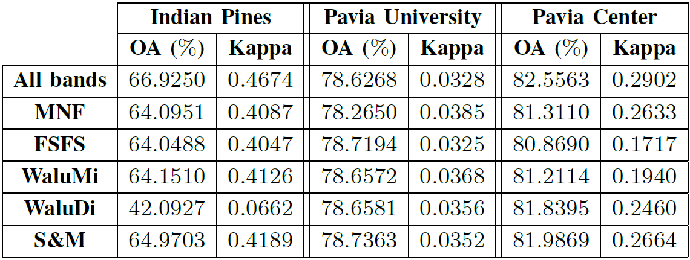

A split-and-merge approach for hyperspectral band selection
The problem of band selection is of great importance
to handle the curse of dimensionality for hyperspectral
image applications (e.g., classification). This paper proposes an
unsupervised band selection approach based on a split-and-merge
concept. This new approach provides relevant spectral subbands
by splitting the adjacent bands without violating the physical
meaning of the spectral data. Next, it merges highly correlated
bands and subbands to reduce the dimensionality of the hyperspectral
image. Experiments on three public datasets and
comparison with state-of-the-art approaches show the efficiency
of the proposed approach.

Fig. 1. OA, kappa, and number of bands for each method on Indian Pines and Pavia datasets.
The band selection algorithm is described in the paper published in IEEE Geosci. Remote Sens. Letters in 2017:
- article
 [ .pdf - 1.7Mo ].
[ .pdf - 1.7Mo ].
The band selection algorithm is available as a MATLAB code:
- matlab codes
 [ .zip - 1.3Mo ].
[ .zip - 1.3Mo ].